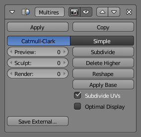

Multiresolution Modifier¶
The Multiresolution Modifier (often shortened to "Multires") gives you the ability to subdivide a mesh similarly to the Subdivision Surface Modifier, but also allows you to edit the new subdivision levels in sculpt mode.
Ghi chú
The Multiresolution Modifier is the only modifier that cannot be repositioned in the stack if it means that there will be geometry or other object data created or removed before it (e.g. all Generate, some Modify and some Simulate modifiers cannot come before the Multiresolution Modifier).
Options¶

Multiresolution Modifier.
- Type
Sets the type of subdivision.
- Simple
- Maintains the current shape, and simply subdivides edges.
- Catmull-Clark
- Creates a smooth surface, usually smaller than the original, using the standard Catmull-Clark subdivision surface algorithm.
Levels¶
- Preview
- Set the level of subdivisions to show in the 3D View.
- Sculpt
- Set the number of subdivisions to use in Sculpt Mode.
- Render
- Set the number of subdivisions to show when rendering.
Operations¶
- Subdivide
- Add another level of subdivision.
- Delete Higher
- Deletes all subdivision levels that are higher than the current one.
- Reshape
- Copies vertex coordinates from another mesh. To use, first select a different mesh object with matching topology and vertex indices, then Shift select the object you wish to copy vertex coordinates to and click Reshape.
- Apply Base
- Modifies the original unsubdivided mesh to match the form of the subdivided mesh.
Further Options¶
- Subdivide UVs
- When enabled, the UV maps will also be subdivided. (i.e. Blender will add "virtual" coordinates for all sub-faces created by this modifier).
- Optimal Display
- When drawing the wireframe of this object, the wires of the new subdivided edges will be skipped (only draws the edges of the original geometry).
- Save External
- Saves displacements to an external
.btxfile.